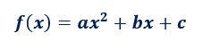
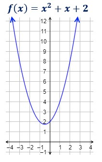
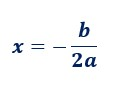
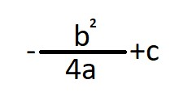
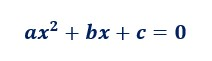
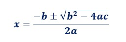

3. Función Cuadratica, ¿Qué es?
Una función cuadrática (o parabólica) es una función polinómica de segundo grado. Es decir, tiene la forma

Siendo "a" diferente de 0.
Esta forma de escribir la función se denomina forma general.
La gráfica de una función cuadrática siempre es una parábola.

Las parábolas tienen forma de ∪ (si a>0) o de ∩ (si a<0).
Además de la orientación, el coeficiente a es la causa de la amplitud de la función: cuanto mayor es |a|, más rápido crece (o decrece) la parábola, por lo que es más cerrada.
VÉRTICE
Las funciones cuadráticas tienen un máximo (si a<0) o un mínimo (si a>0). Este punto es el vértice de la parábola.
La primera coordenada del vértice es:

Y la segunda coordenada, sería y=

PUNTO DE CORTE CON CON LOS EJES
Una parábola siempre corta el eje de ordenadas (eje Y) en un punto. Como esto ocurre cuando x = 0 , se trata del punto ( 0 , c ) puesto que f ( 0 ) = c .
Una función corta al eje de abscisas cuando y = 0 . Por tanto, para hallar estos puntos de corte, tenemos que resolver una ecuación cuadrática:

Como una ecuación cuadrática puede tener una, dos o ninguna solución, puede haber uno, dos o ningún punto de corte con el eje X.
Recordamos la fórmula que necesitamos:
